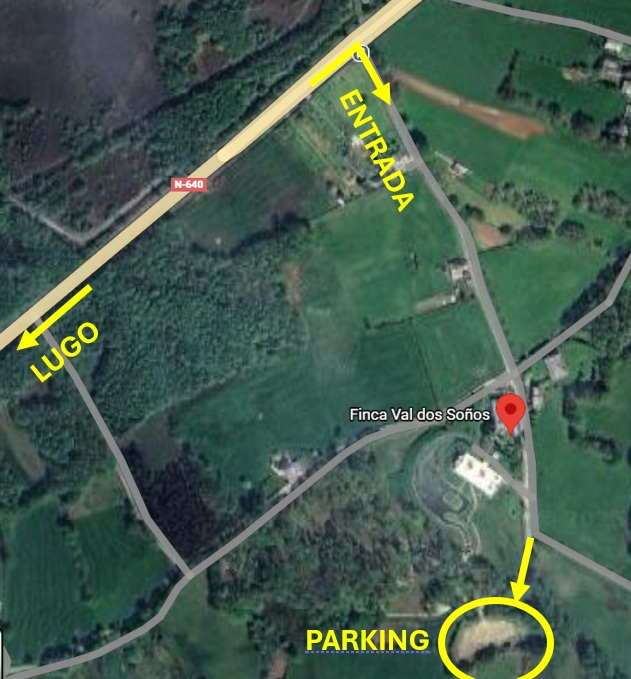
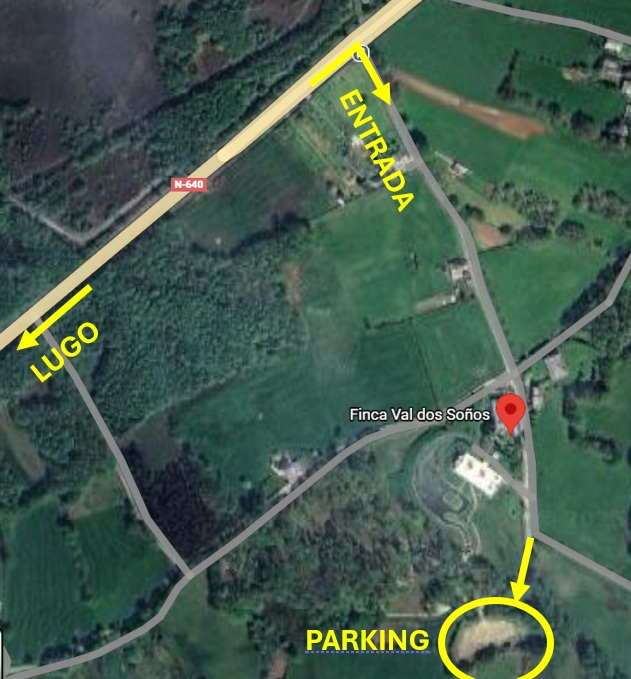

Antes de conocernos y empezar nuestra aventura, los dos teníamos vidas muy diferentes
y a la vez muy parecidas en algunos aspectos. Nos costó adaptarnos a nuestro entorno y en ciertas ocasiones cada uno se perdió en su propia historia, dejando de darnos la importancia que merecíamos.
Pero eso cambió. Cerramos puertas y ventanas que no nos hacían ser nosotros mismos
y comenzamos a reencontrarnos, a reconocernos y a darnos valor como personas.
En el momento en el que nos sentimos plenamente nosotros mismos, sabiendo lo que
queríamos y poniéndonos en valor, a través de la tecnología (una app), conectamos.
Empezamos a hablar, a conocernos sin ocultar nada, mostrándonos tal y como somos,
con nuestras virtudes y nuestros defectos.
Cada día era descubrir algo nuevo del otro que nos hacía unirnos más.
A los pocos meses, un susto podría haberlo cambiado todo. Pero, hay cosas que no se olvidan y lo único que podía decir era:
“No me acuerdo de nada, solo sé que eres Rosa, eres cirujana y te tengo que llamar.”
Si todo dentro de mi cabeza se había olvidado, pero eso permanecía, era porque ya
no estaba solo en mi mente: formaba parte de mí.
Desde entonces seguimos caminando juntos, formando un nosotros fuerte y grande,
donde cada uno es individual y los dos somos un conjunto.
Hemos viajado, hemos conocido a la familia y gente cercana del otro, entrenamos juntos y nos hemos comprado una casa. Y para que este día llegara, hemos tenido que irnos a 15.000 km y esperar 21 cartas a lo largo de dos años para poder celebrar nuestro amor con todos vosotros, que formáis parte de nuestra historia.
 
